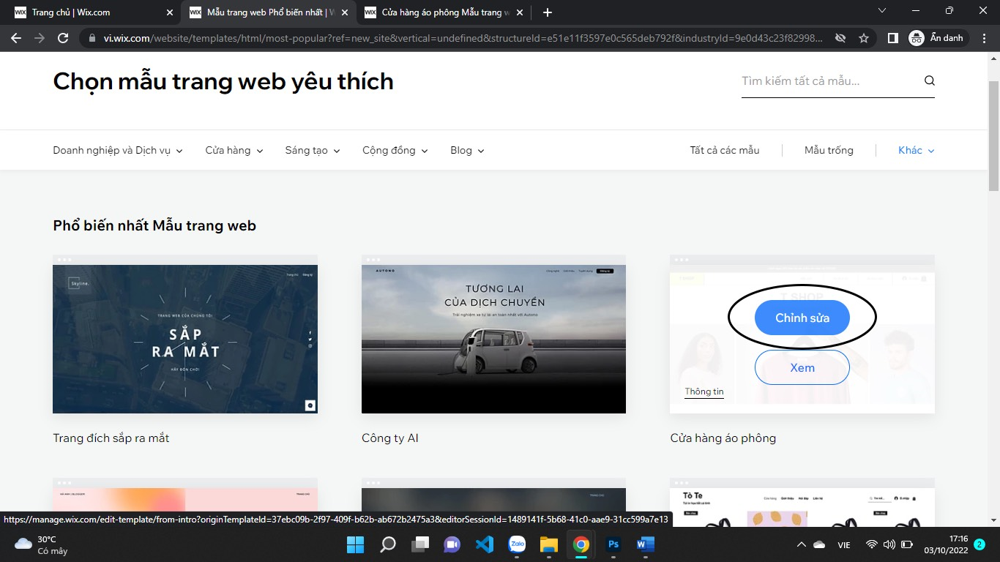
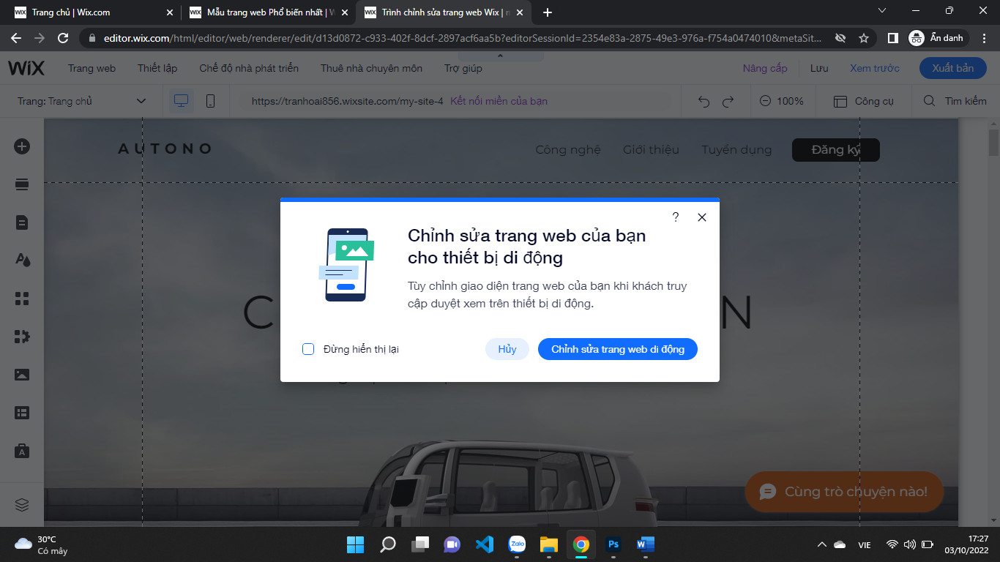

Bài 4: Thiết kế và quản trị website với công cụ
Nội dung bài học
1. Giới thiệu
WIX hay Wix.com là một nền tảng xây dựng website cho phép người dùng khởi tạo website trực tuyến dựa trên thao tác kéo thả. Vậy cơ sở nền tảng xây dựng website WIX là gì? WIX tích hợp với HTML5. Bằng thao tác kéo thả đơn giản, bạn đã có thể thiết kế một website cho riêng mình. Chỉ cần đăng ký tài khoản, bạn đã có thể sử dụng các công cụ của WIX để tạo nên trang web riêng.
Về cơ bản, nền tảng WIX là miễn phí. Tuy nhiên, nó cũng cung cấp các gói trả phí với nhiều tính năng nâng cấp. Ví dụ như xóa logo của WIX, thêm các tính năng của trang thương mại điện tử, sử dụng tên miền riêng,… Hiện tại WIX đang được hơn 100 triệu người sử dụng trên phạm vi hơn 190 quốc gia.
Bên cạnh các ưu điểm về tính năng và sự tiện dụng, nền tảng WIX cũng tồn tại một số nhược điểm nhất định. Cụ thể như:
- Gói miễn phí có nhiều hạn chế: Trên cơ bản WIX là nền tảng miễn phí. Nhưng gói Free này không cho phép bạn được sử dụng tên miền của riêng mình. Domain phải có dạng: username.wix.com/sitename. Đồng thời bị hiển thị quảng cáo thường xuyên và giới hạn một số chức năng quan trọng.
- Gói trả phí có giá khá đắt: Muốn tạo website với tên miền riêng và sử dụng thêm các tính năng nâng cấp khác, bạn phải dùng bản trả phí. Khoản chi này không hề rẻ một chút nào. Gói nâng cấp rẻ nhất của WIX có giá 4.5 USD/tháng nhưng chỉ có 5000MB dung lượng và băng thông 1GB/tháng. Với gói này, bạn có thể dùng tên miền riêng nhưng không thể xóa logo của WIX. Muốn làm website riêng theo ý mình một cách hoàn chỉnh? Bạn phải dùng gói Combo 8.5 USD/tháng hoặc gói Unlimited 12.5 USD/tháng.
- Ít ứng dụng hỗ trợ: Nền tảng WIX đang có khoảng hơn 500 app hỗ trợ, con số này quá nhỏ so với số lượng plugin trên WordPress hiện nay.
2. Các bước tạo website với Wix
Truy cập vào website chính thức của WIX: https://vi.wix.com
Nhấp chọn Nút "Bắt đầu"
Cần 1 tài khoản để thực hiện dễ dàng hơn với WIX, khuyến khích nên sử dụng tài khoản Gmail (Google). Sau khi tạo tài khoản thành công, nhấp chọn Bỏ qua
Đặt tên cho trang web, ví dụ:
Nhấp chọn "Đến Trang Tổng Quan"
Nhấp chọn tên trang wed bên trên góc trái màn hình
Tiếp tục nhấp chọn Tạo trang web mới
Chúng ta có thể chọn 1 loại trang web bất kì hoặc nhấn "Bỏ Qua" phía góc tay phải cuối màn hình:
Tiếp tục "Bỏ Qua" cho đến:

Ở bước này chúng ta có thể chọn 1 mẫu có sẵn để sửa lại theo đúng ý mình hoặc nhận 1 trang web được thiết kế sẵn, khuyến khích chọn "Chỉnh sửa mẫu". Nếu chọn Chỉnh sửa mẫu:
Chọn 1 mẫu ưng ý và chỉnh sửa lại theo ý của chúng ta
Ấn chọn "Chỉnh Sửa". Tại đây chúng ta có thể sửa lại trang web của mình bằng những công cụ có sẵn bên góc trái màn hình
Sau khi chỉnh sửa hoàn tất nhập "Lưu" và "Xuất Bản" bên góc trên bên phải màn hình
Nhấn nhận miền với Wix.com miễn phí, chọn lưu và tiếp tục
Nhấp chọn Xong
Lưu ý: Khoảng được khoanh vùng đó là đường dẫn đến website. Chúng ta có thể thiết kế web theo chế độ xem trên di động:
Ấn chọn "Chỉnh sửa trang web di động"
Đây là chỉnh sửa theo chế độ người dùng ( Di động ) đã được thiết kế sẵn chúng ta có thể sửa lại theo ý muốn bằng những công cụ trên góc trái màn hình
Bây giờ chúng ta có thể truy cập trang web với tên miền miễn phí có phần mở rộng .wix.com. Tìm hiểu thêm về cách tạo và quản trị website với WIX tại các cộng đồng trên Internet.